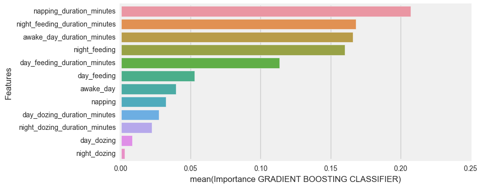
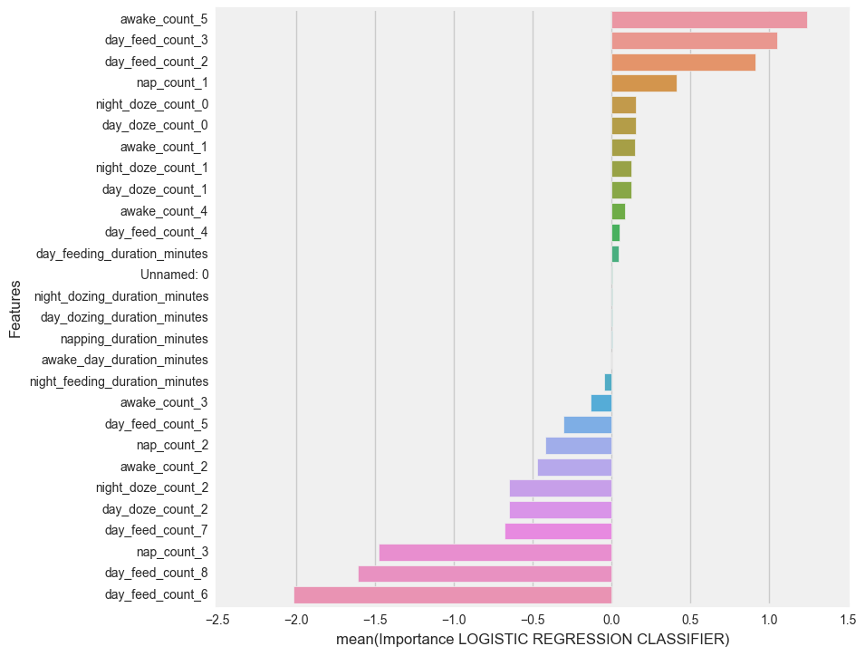

Visual Feature Importance for Classifiers
Required packages
- seaborn
Run a classifier
import pandas as pd
from sklearn.ensemble import GradientBoostingClassifier
from sklearn.cross_validation import train_test_split
%matplotlib inline
# Import the data.
df = pd.read_csv('../data/sleeping_model.csv')
# Set the target variable.
y = df['target']
df.drop(['Unnamed: 0', 'target', 'day_period', 'sleep_rate', 'sleeping_nights','day_multi_feeding', 'night_multi_feeding', 'sleeping_nights_duration_minutes'], axis=1, inplace=True)
X = df
# Do a train test split.
X_train, X_test, y_train, y_test = train_test_split(X, y, test_size=0.3, random_state=42, stratify=y)
# Run the model.
gb_clf = GradientBoostingClassifier(max_features='log2', loss='exponential', learning_rate=0.13, n_estimators=100)
gb_clf.fit(X_train, y_train)
y_pred = gb_clf.predict(X_test)
y_proba = gb_clf.predict_proba(X_test)
Import the classifier plot module
from classifier_plot import evaluate_features
# Pass the criteria accordingly and save time.
evaluate_features(X_train.columns, gb_clf.feature_importances_, ' GRADIENT BOOSTING CLASSIFIER', 8,4)

Also works with Logistic Regression
from sklearn import linear_model
# Import the data.
df_logit = pd.read_csv('../data/sleeping_logistic.csv')
# Set the target variable.
y1 = df_logit['target']
df_logit.drop(['target'], axis=1, inplace=True)
X1 = df_logit
# Do a train test split.
X1_train, X1_test, y1_train, y1_test = train_test_split(X1, y1, test_size=0.3, random_state=42, stratify=y)
# Run the model.
logistic = linear_model.LogisticRegressionCV(random_state=99, n_jobs=-1, solver='lbfgs',\
penalty='l2', cv=10, Cs=3)
logistic.fit(X1_train, y1_train)
y1_pred = logistic.predict(X1_test)
y1_proba = logistic.predict_proba(X1_test)
# Extract the feature coefficients
logistic_coef = [i for i in logistic.coef_.tolist()[0]]
# Input the data and adjust the chart size.
evaluate_features(X1_train.columns, logistic_coef, ' LOGISTIC REGRESSION CLASSIFIER', 8,8.5)

Download module